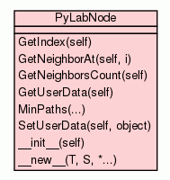

Class PyLabNode

The node is the base entity constituting a Network. Those classes have
a natural hierarchy of PyLabNetwork > PyLabNode > edges.
A PyLabNode is a node of the PyLabNetwork (they are link between each other by
edges). Each node can carry an object / site (of any kind, user is free
to choose a custom representation, but it is recommended to use existing
PyLabSiteBase,
PyLabSiteEvent
or at least sub-classes of PyLabSiteBase).
USAGE :
A node cannot exist without a network (See PyLabNetwork
first). Once your network is populated of nodes, each node has to be
setup. There is two ways of doing this :
Manually :
>>> a_site = PyLabSiteBase(sim)
>>> a_node.SetUserData(a_site)
There is also more automated ways which come with the PyLabNetBinding available via the
"netBinding" member of all *Net versions of the
simulator (See, for example, the PyLabSimulatorTimeNet). See PyLabNetBinding, for a deeper description of those
methods.
Moreover those automated ways give access to more advanced
features (which are not available while proceeding manually) :
the Sets related features (See PyLabSiteSetsCalculator for getting a full
understanding of the Sets based system).
int
|
GetIndex(self)
Get the index of the node in its network. |
|
|
|
|
GetNeighborAt(self,
i)
Get the direct neighbor of the current LabNode located at the
specified index. |
|
|
int
|
|
|
|
|
object
|
|
list
|
MinPaths(...)
Get the distance between this PyLabNode and each other in the given
group. |
|
|
|
|
|
|
|
__init__(self,
embed_c= True)
Default constructor. |
|
|
|
a new object with type S, a subtype of T
|
|
|
Inherited from object:
__delattr__,
__format__,
__getattribute__,
__hash__,
__reduce__,
__reduce_ex__,
__repr__,
__setattr__,
__sizeof__,
__str__,
__subclasshook__
|
|
Inherited from object:
__class__
|
|
Get the index of the node in its network.
- Returns:
int
- An index in the nodes list of the parent network.
|
|
Get the direct neighbor of the current LabNode located at the
specified index.
- Parameters:
i (int) - Index in the neighbors list.
|
|
Get the number of direct neighbors of the current LabNode.
- Returns:
int
- A number of neighbors.
|
|
Get user's data embedded in this PyLabNode (usually a Site - See PyLabSiteBase and
PyLabSiteEvent)
- Returns:
object
- The data carried by this node.
|
|
Get the distance between this PyLabNode and each other in the given
group.
- Parameters:
nodes (list) - The group of nodes to be confronted to this one. - Returns:
list
- The distances vector of doubles.
|
SetUserData(self,
object)
|
|
Set user's data embedded in this PyLabNode (usually a Site - See PyLabSiteBase and
PyLabSiteEvent)
- Parameters:
object (object) - The data carried by this node.
|
__init__(self,
embed_c= True)
(Constructor)
|
|
Default constructor.
- Parameters:
embed_c (bool) - DO NOT CHANGE - Leave it to True ! - Overrides:
object.__init__
|
- Returns: a new object with type S, a subtype of T
- Overrides:
object.__new__
|